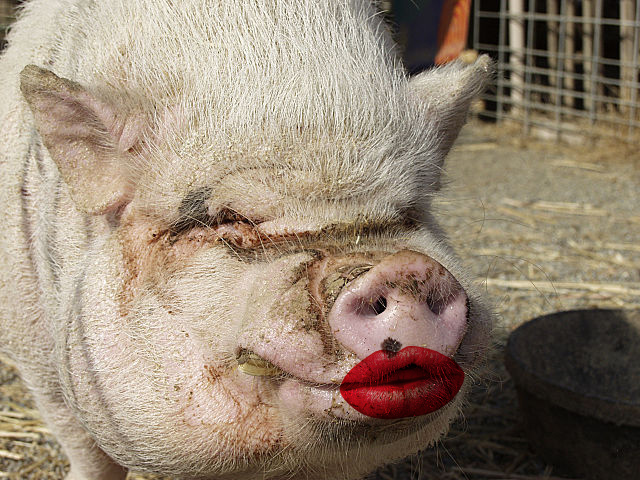

That Proper Mexican Pork (plus tacos)

Description
Consistently, this dish makes me shit myself because it's just. so. damn rich. It's delciious. Lots of oil, coca cola, and citrus make for one of the best and most authentic recipes around. Damn I'm all horny just thinking about it. Pig.
Ingredients
- pork ass
- mexican coke
- oranges
- vegetable oil
- tripe
- a sprinkle of love
Steps
- chop up that ass into as many fist sized pieces as you can. Fist the pork oooooof.
- Pour roughly one gallon of vegetable oil into a large pot and get that shit HOT.
- Chop them oranges into quarters and throw em in the pot along with the coke. Shit should be dangerous at this point.
- Throw in the pork ass!!! and the tripe!
- Let it cook until everything feels all soft and breakable mmmmmm
- pull it all out. Discard the oranges. Chop the pork and the tripe into tiny little pieces. Essentially pull it apart. Don't be shy. Use the big knife.
- Voilah! Done